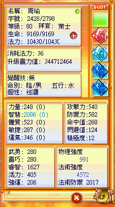

連結：https://mo.lager.com.tw/default/index_news?id=2533
主卡與尾料練到 91 級後進行生變。生變後屬性分為上排 (原暗黑料理數值) 與下排 (武勇、靈巧、睿智、活力、強運)。

下排料理不需指定屬性劑，但可使用輔助廚具提升效率。
| 類型 | 最佳道具 | 效果 |
|---|---|---|
| 吸收率 | 蝦肉豆腐皮 | 增加 5% 吸收率 |
| 等差適應 | 清蒸鰻魚肉 | 增加適應 9 |
| 等級區間 | 吸收率 | 屬性上限 |
|---|---|---|
| LV 1~60 | 100% | 1998 |
| LV 61~70 | 80% | 2398 |
| LV 71~80 | 40% | 2798 |
| LV 81~90 | 20% | 3398 |
| LV 91~100 | 10% | - |
最佳方案建議： 生變英練到 60 後，每一階段直接吃對應等級的發光料理，確保吸收效率最大化。